Design for Autonomous Driving Development
AAI Simulation Testing Solutions
Project info
B2B Products.
Duration: 8 Months
Launch Time: April 2019
Duration: 8 Months
Launch Time: April 2019
MY ROLE
End to End Product Design.
Bring UX into the whole product development cycle.
Lead usability test and redesigned key features.
Bring UX into the whole product development cycle.
Lead usability test and redesigned key features.
Background
AAI GmbH(Automotive Artificial Intelligence) is a high-tech company based in Berlin, aiming to support safer and faster development of highly automated driving. It provides the simulation testing platform in order to test the control algorithm of automotive vehicles. Comparing to road tests, simulation testing is a safer and more efficient solution.
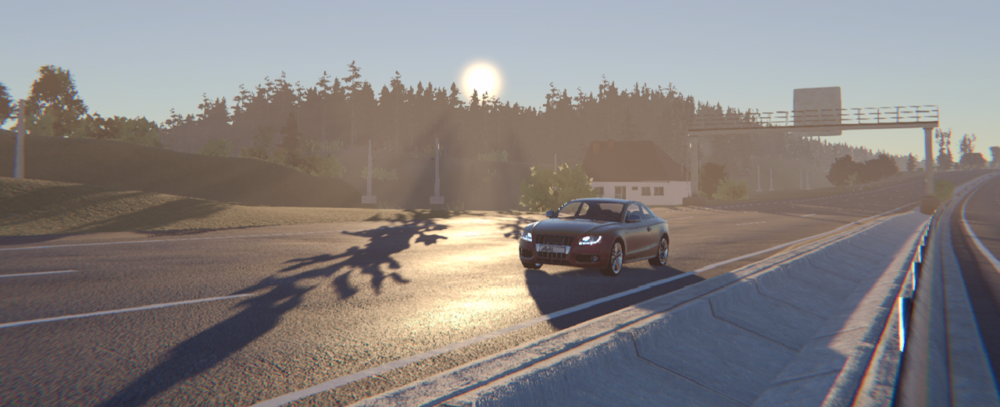
With the ultimate goal to improve algorithm through simulation testing, we provide a product suite including multiple modules. As a full-stack designer, I have helped to bring several products to life. There are mainly two products: AAI ReplicaR for test configuration and management, and AAI Scenario Extraction to extract scenarios from real world and conduct analysis.
design Process
The major challenge of Enterprise UX is its ambiguity and complexity. At the very beginning, we faced the situation that the requirements were ambiguous, and actually nobody knew the full picture. Moreover, what we were to design was a complicated system consisted of different technical modules. To tackle the challenges, this is how design proc
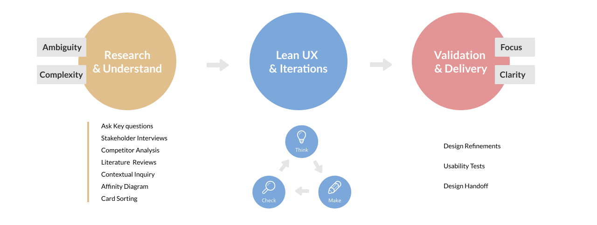
Users

FROM 0 TO 1
User Flow

Lean UX
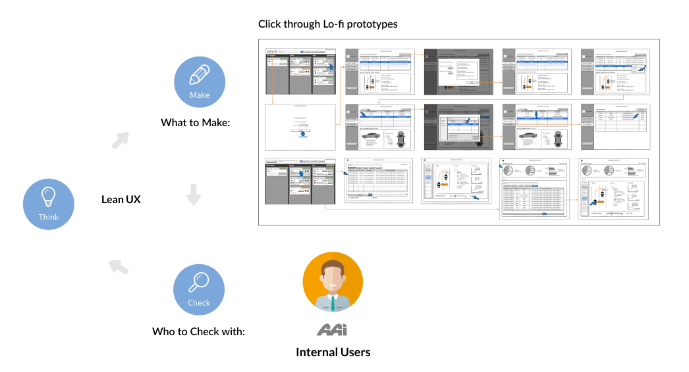
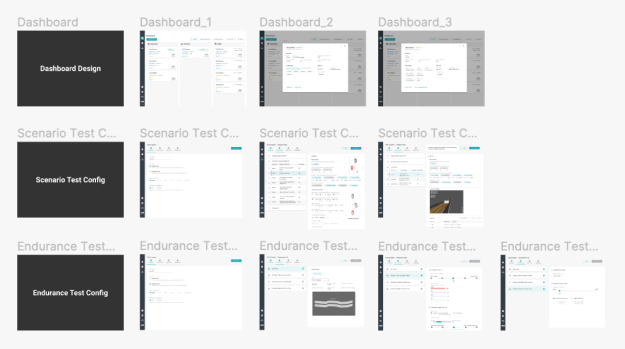
Initial Design
Configure Scenario / Endurance Test
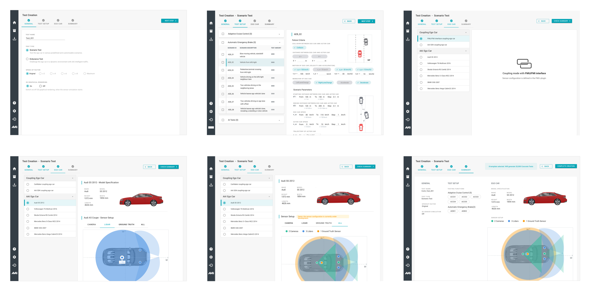
Scenario Test List Design
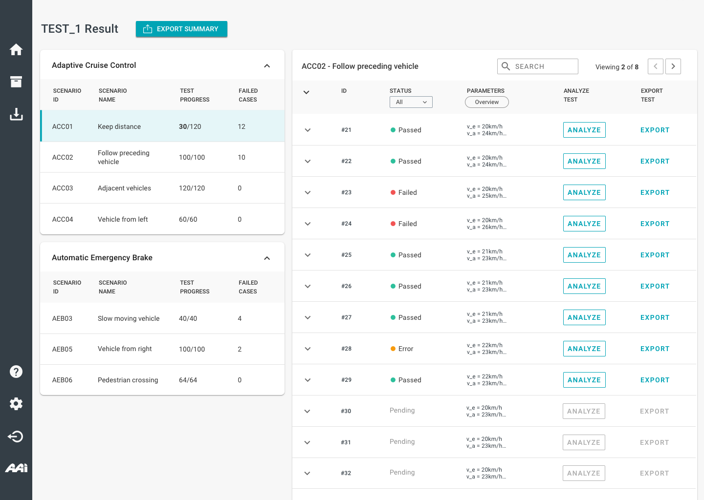
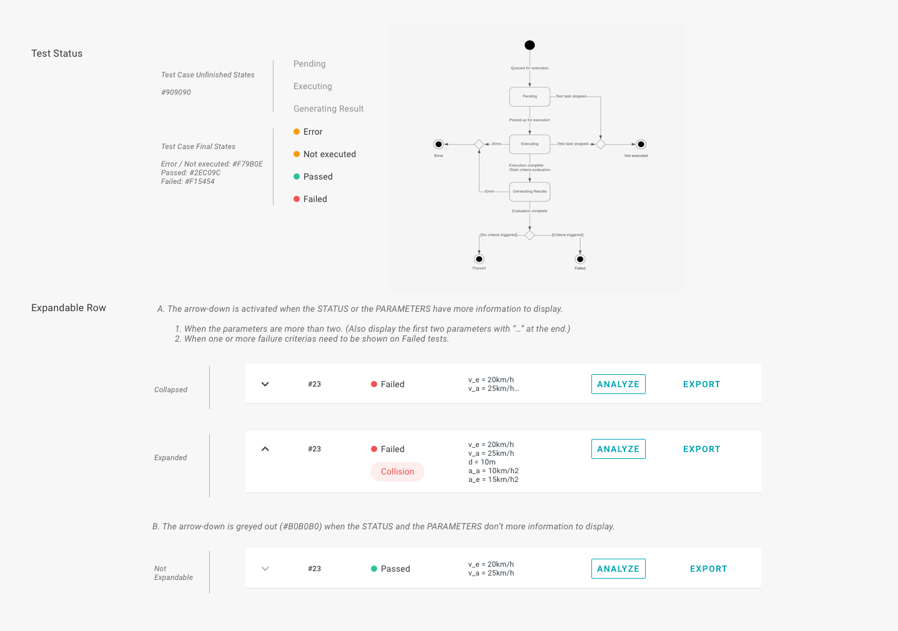
Test Monitor Design
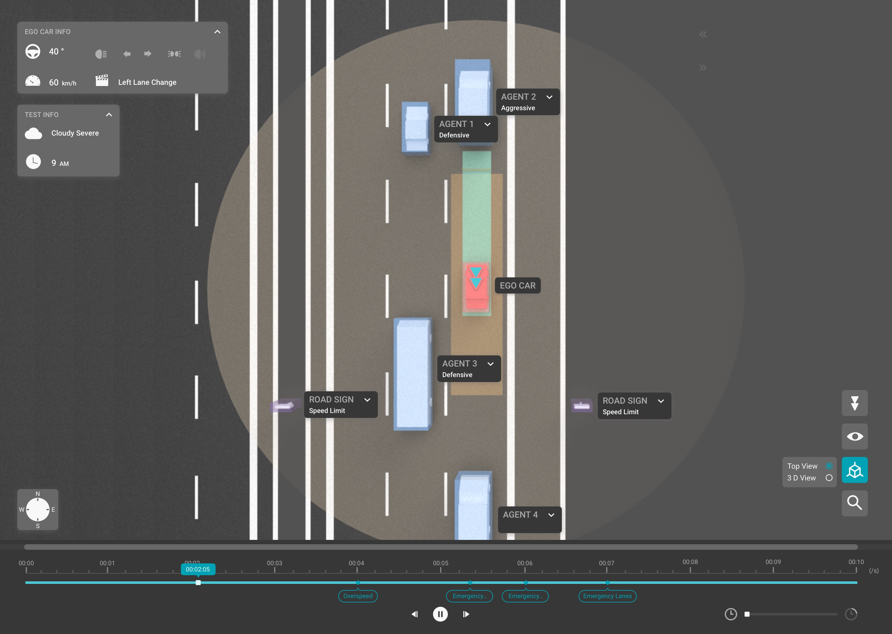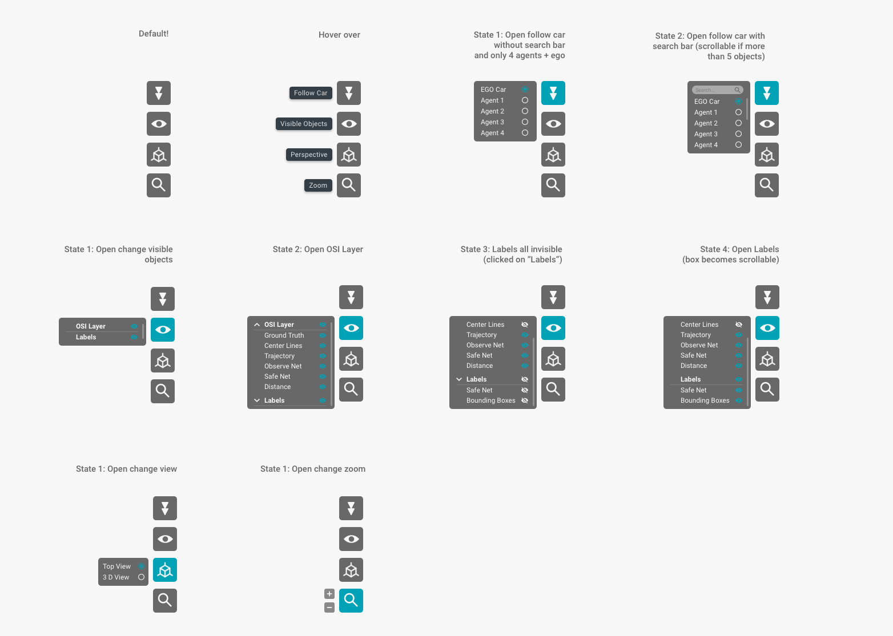
uSABILITY TEST
In order to ensure the quality of our product before launching to customers, we ran an internal usability test of the key features. Based on customer requirements, one of the most important feature is Configuration of Scenario Test, which might have some usability issues.
We identified there were some usability issues of the original design, as shown below.
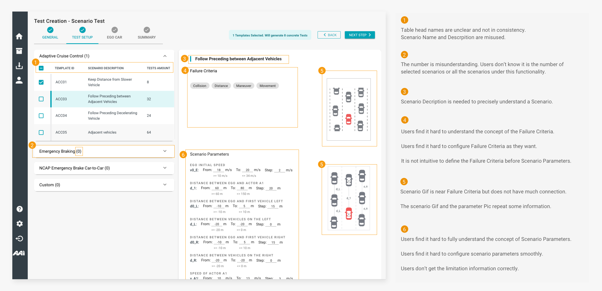
Redesign & ITERATION
Parameter Configuration Redesign
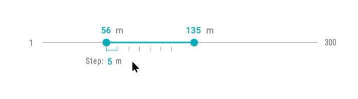
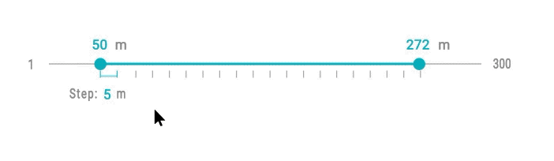
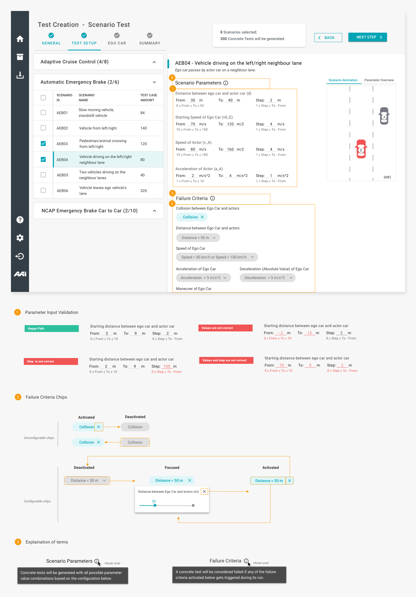
updated ui
Learnings & REFLECTIONS
Reflecting on the whole process, what we did well was figuring out a design strategy to solve different problems, under limitations and constraints. We initiated the Lean UX methodology at the very beginning to iterate quickly. In this way we shaped the product from zero to one. Moreover, to ensure the product quality, I led the internal usability tests which helped us found many issues for redesign. This in the end received highly praise from our customers.
However, there are also many to be improved. We found that there are always some misalignments between the design and the implementation. It took much time to define the design in details and communicate it with front-end developers. To improve the consistency and the efficiency in the long run, we found it necessary to build a design system, which could be seen in the next project.
However, there are also many to be improved. We found that there are always some misalignments between the design and the implementation. It took much time to define the design in details and communicate it with front-end developers. To improve the consistency and the efficiency in the long run, we found it necessary to build a design system, which could be seen in the next project.